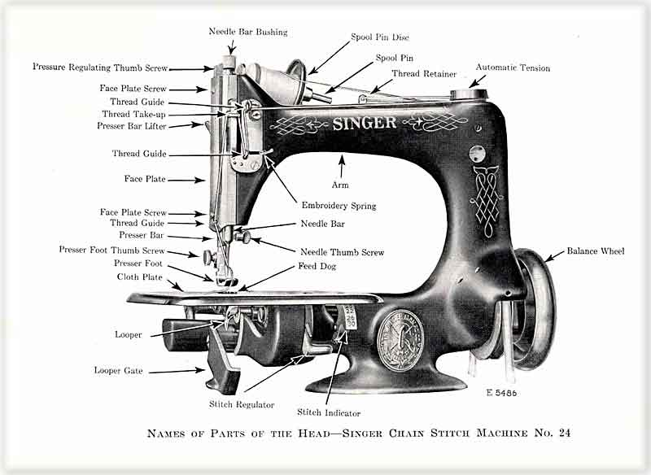
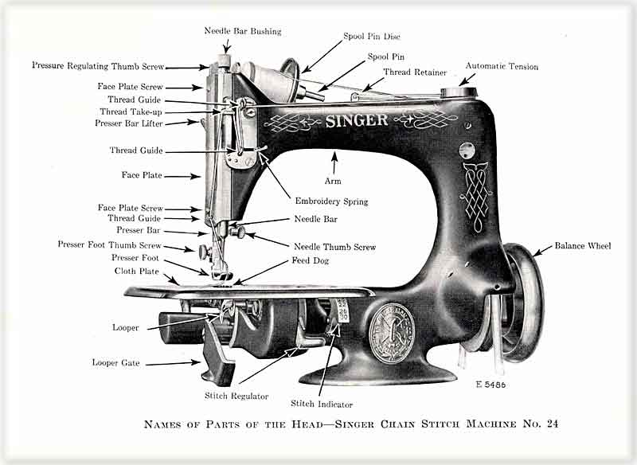

Singer Model 24
PARTS OF A MODEL 24 SEWING MACHINE

© Alan Quinn
2003
This page may not be reproduced or distributed in part or in whole without the prior written permission of the copyright owner

This page may not be reproduced or distributed in part or in whole without the prior written permission of the copyright owner